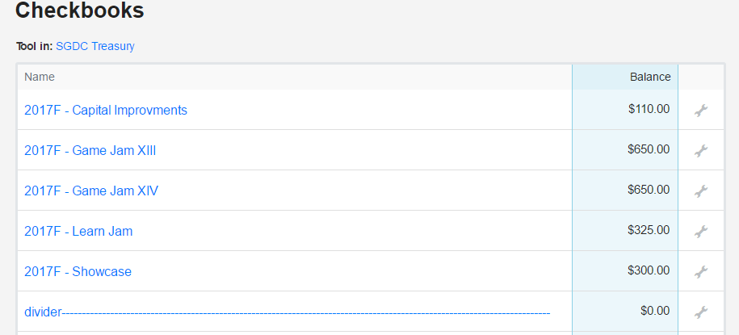
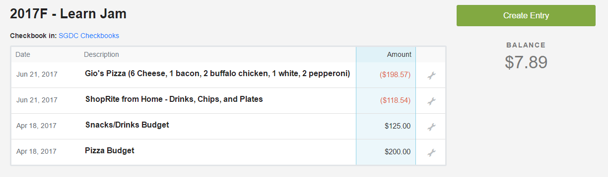
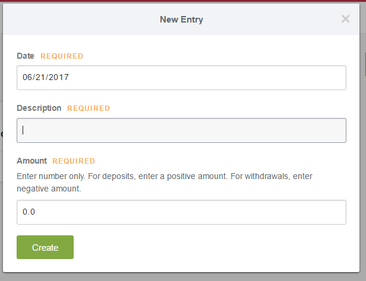

Any time money leaves your club's account, you should be updating your checkbook. By organizing each event (or spending category, ie Capital Improvements) into its own unique checkbook, you can create an easily navigable, maintainable, and useful checkbook.
This is how an upcoming semester should look:
These checkbooks all match 1:1 with the approved budget this club received. Let's open up '2017F - Learn Jam' to see how it looks.

As we can see, this budgeted event had two line items: a Snacks/Drinks budget, and a Pizza budget. Refer to the SGA Budgeting Guidelines to make sure your line items are within any limits that may apply. How might this checkbook look after the event was finished?
The club did a good job staying within their budget, and spent appropriate amounts per each item. They're good to go.
Adding entries to checkbooks is easy. Press the Create Entry button and a form will come up. It will ask you for a description, date, and amount. Date does not really matter, and is filled in automatically with the date of entry. Enter positive values to add money to your checkbook, and add negative values to subtract it.
That about does it for Checkbooks. Whether you're filling out a purchase order or swiping your p-card, make sure you're keeping your checkbook up to date, and everything should be just fine.
Next Section: All about P-cards ---->Back to Home